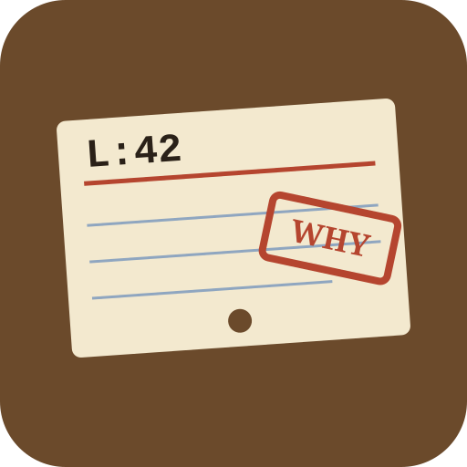

a62a2d35d9 · 2024-05-22
Ian Stapleton Cordasco
Allow for overriding of specific pool key params

lineloreCALL No. 005.1 · BLAME
Point it at a line. It pulls the catalog cards: the commit, the pull request that merged it, the issues it closed and the review comments left on that spot.
a62a2d35d9 · 2024-05-22
Ian Stapleton Cordasco
Allow for overriding of specific pool key params
merged 2024-05-24 by @sigmavirus24
“Re-enables providing a custom SSLContext via a Transport Adapter, as broken in #6655.”
see also: psf/requests#6655
SSLV3_ALERT_HANDSHAKE_FAILURE after upgrade 2.31.0 → 2.32.2
state: closed
Real output from linelore src/requests/adapters.py:420 on psf/requests. Tap a tab to pull a card.
git blame on that one line, ignoring whitespace and anything in .git-blame-ignore-revs.local, no network#123 it mentions.cross-referencespipx install git+https://github.com/Blackman99/linelore
cd your-repo && linelore path/to/file.py:42
Python 3.9+, no dependencies. Uses your gh login or GH_TOKEN if present; works anonymously on public repos. --json for scripts and editors, --offline for local-only.